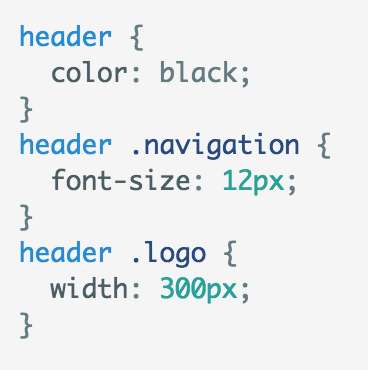
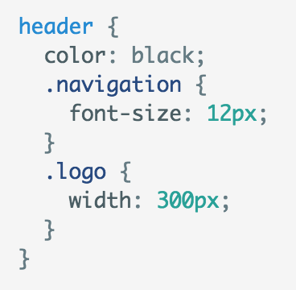
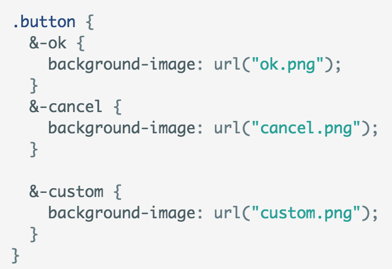
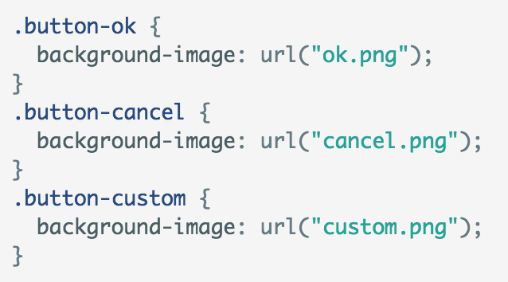
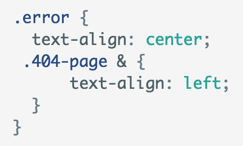
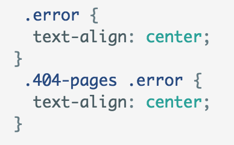
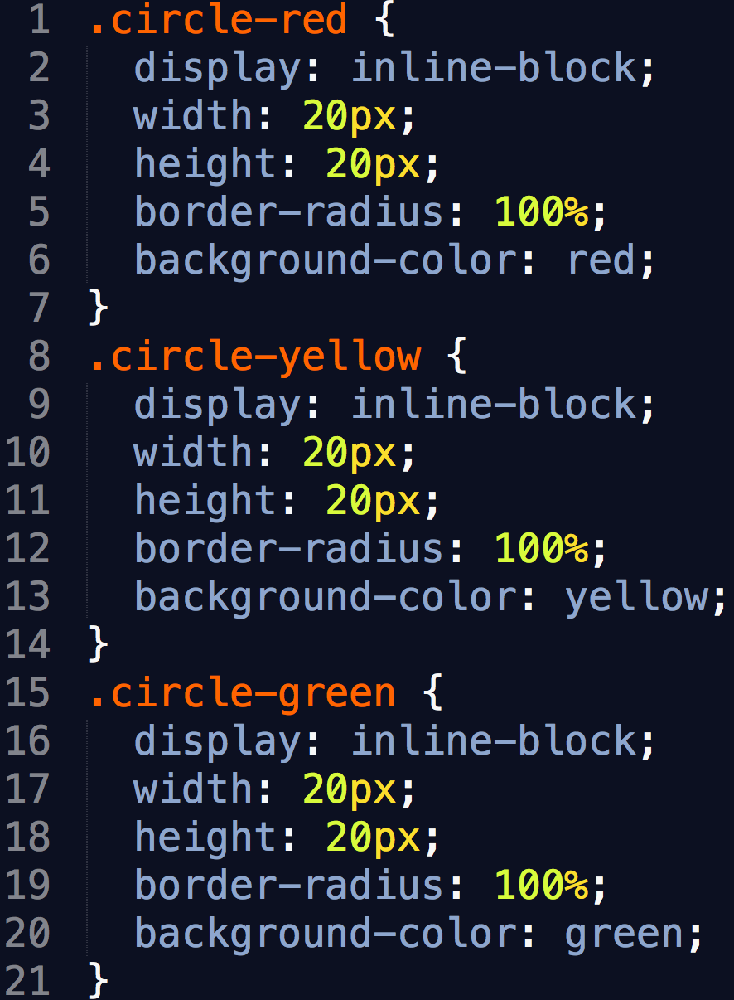
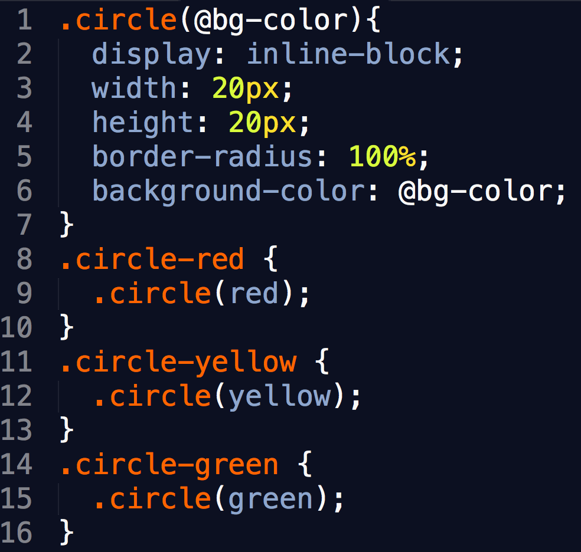
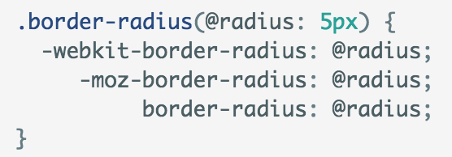
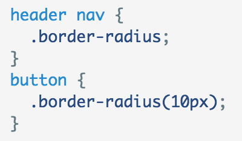

ThoughtWorks®
Review HTML & CSS
Si Xiaojing aka Sarah
ThoughtWorks®
Less
Si Xiaojing aka Sarah
Nested rules
Normal css VS Less

VS

Note: Nest layer less than 3
'&' represents the current selector
Another usage of '&'

Less

After compile
Usage of '&'

Less

After compile
Variables
Mixins
In css

In less with mixin

In less with '&'

normal usage


@arguments variable
.big-block {.box-shadow(2px; 5px);}
.big-block {.box-shadow(@blur: 5px; @x: 2px);}
Fragment Styles
There's different types of fragments, like:
grow
shrink
roll-in
fade-out
current-visible
highlight-red
highlight-blue
Tabular Tables
| Item | Value | Quantity |
|---|---|---|
| Apples | $1 | 7 |
| Lemonade | $2 | 18 |
| Bread | $3 | 2 |